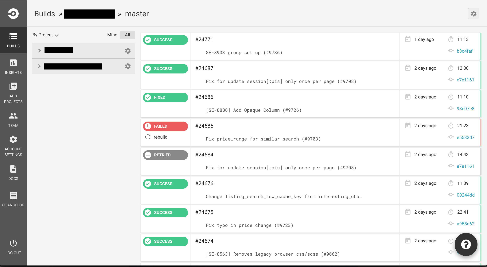
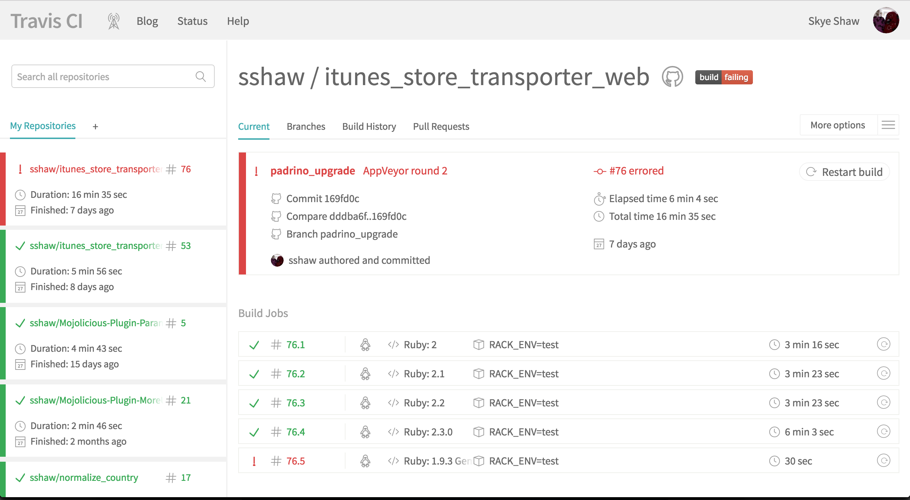
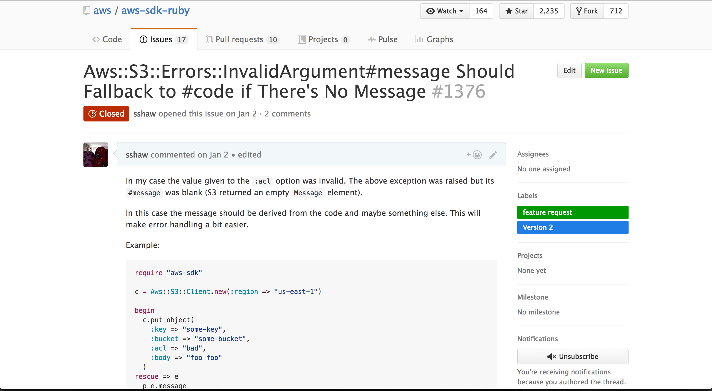
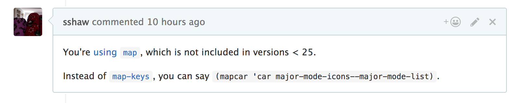 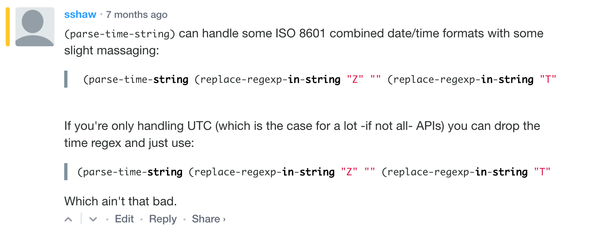
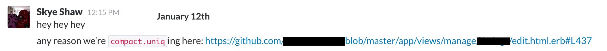 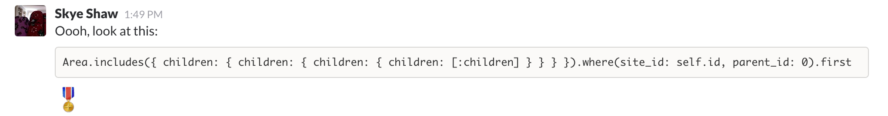 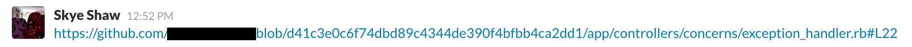
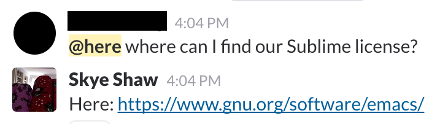
M-x build-status-mode
Set your token
;; optional (setq build-status-travis-ci-token "TOKEN")
Can also be set via Git
git config --add build-status.api-token TOKEN
Set the check interval
;; optional, defaults to 300 (setq build-status-check-interval 120)
Adjust some colors
(set-face-foreground 'build-status-passed-face "tan1") (set-face-background 'build-status-queued-face "mediumblue")
Ignore a status
(add-to-list 'build-status-travis-ci-status-mapping-alist '("created" . ignore))
M-x package-install build-status
M-x git-link
C-u M-x git-link prompts for remote.
Always use Git SHA in link
(setq git-link-use-commit t)
Set the defaults
;; defaults to origin (setq git-link-default-remote "og") ;; defaults to master (setq git-link-default-branch "featureX")
Defaults can also be set via Git
git config --add git-link.remote og git config --add git-link.branch featureX
Open link on kill
(setq git-link-open-in-browser t)
Bind some keys
(global-set-key (kbd "C-c g l") 'git-link) (global-set-key (kbd "C-c g c") 'git-link-commit) (global-set-key (kbd "C-c g h") 'git-link-homepage)
Add private repository
(eval-after-load 'git-link '(progn (add-to-list 'git-link-remote-alist '("github.example.com" git-link-github)) (add-to-list 'git-link-commit-remote-alist '("github.example.com" git-link-commit-github))))
M-x package-install git-link
M-x copy-as-format
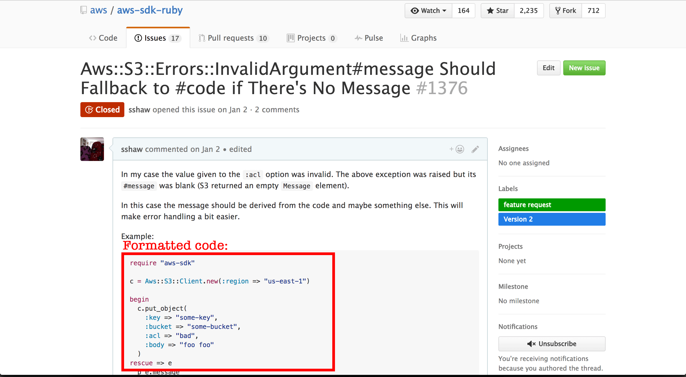
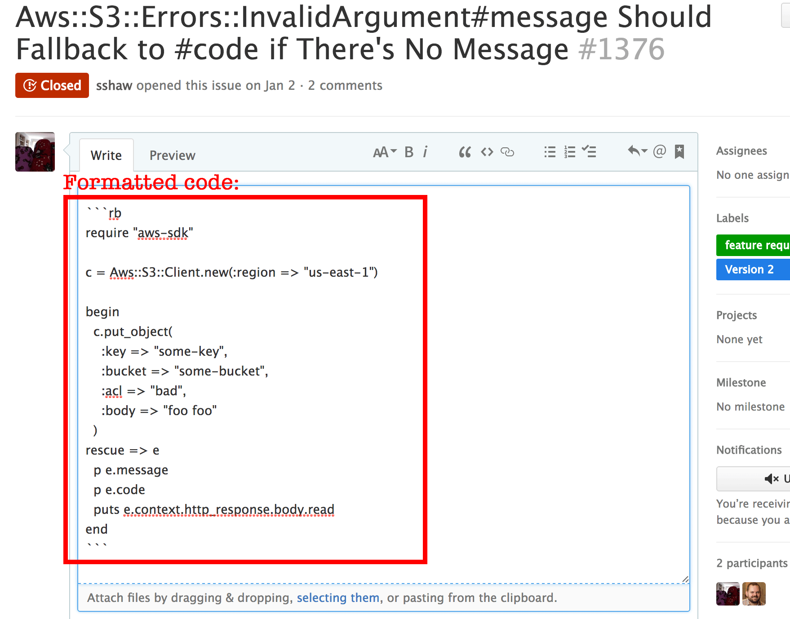
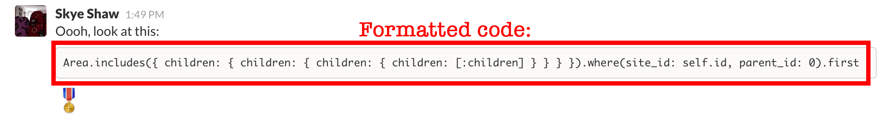
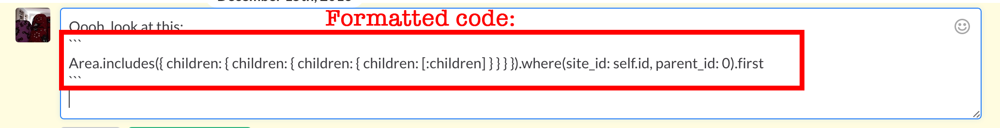
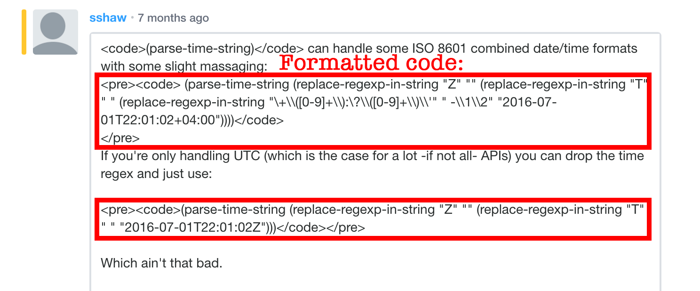
C-u M-x copy-as-format prompts for format
Set default format
;; defaults to markdown (setq copy-as-format-default "github")
Bind some keys
(global-set-key (kbd "C-c w s") 'copy-as-format-slack) (global-set-key (kbd "C-c w g") 'copy-as-format-github)
Add a format
(defun copy-as-format-org-mode (text multiline) (format "#+BEGIN_SRC %s\n%s\n#+END_SRC\n" (replace-regexp-in-string "-mode\\'" "" (symbol-name major-mode)) text)) (add-to-list 'copy-as-format-format-alist '("org-mode" copy-as-format-org-mode))
M-x package-install copy-as-format